FarmCodeNote / FCN
编程农场 × 经营模拟 × 塔防
用编程控制机器人经营农场、自动化生产与运输，穿插动态经济、金融系统和哥布林袭击。一个将编程、经营和探索融合在一起的独立游戏项目。
GODOT / 像素主题实机截图
Windows · Godot 4.7.2 · 2026-10-09 · 1200 × 760 原图。正在迁移像素主题前端，保留 C++ 核心与 FarmScript；以下为实机静态画面。点击截图查看原图。

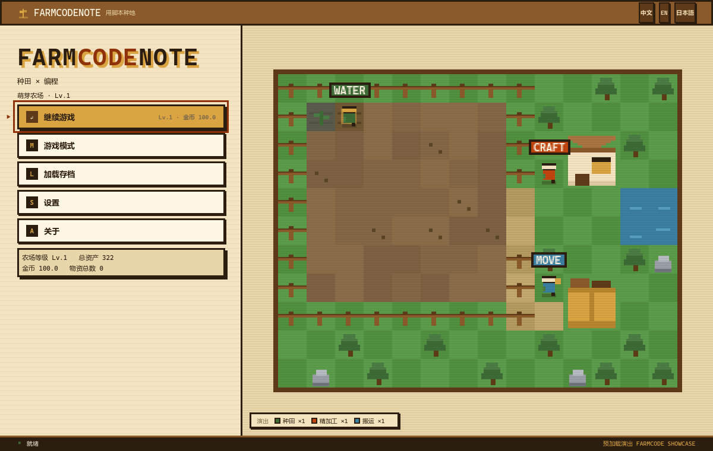

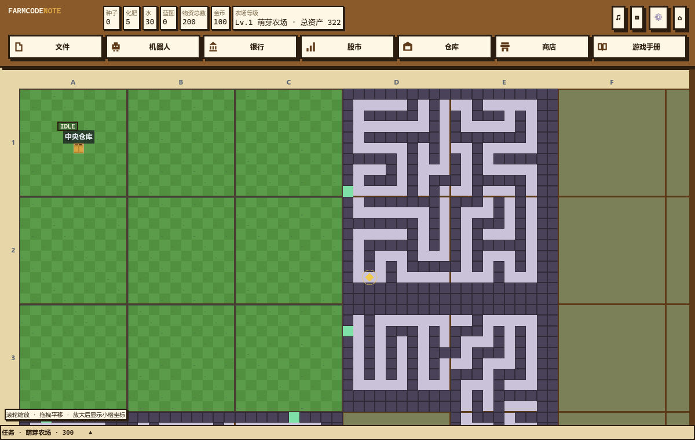

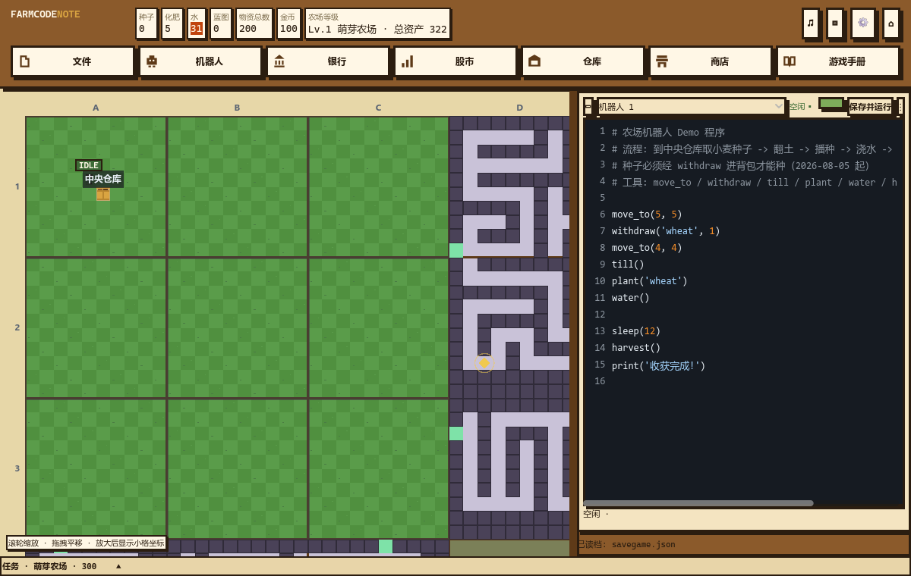

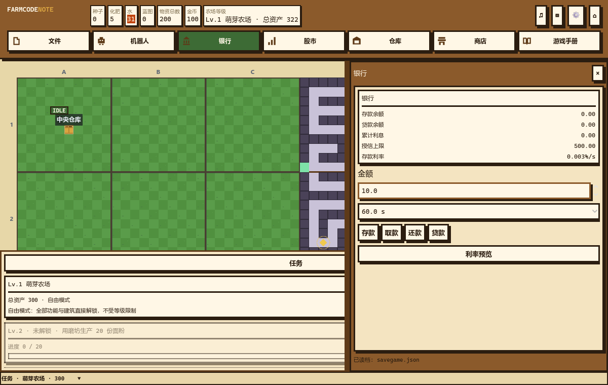

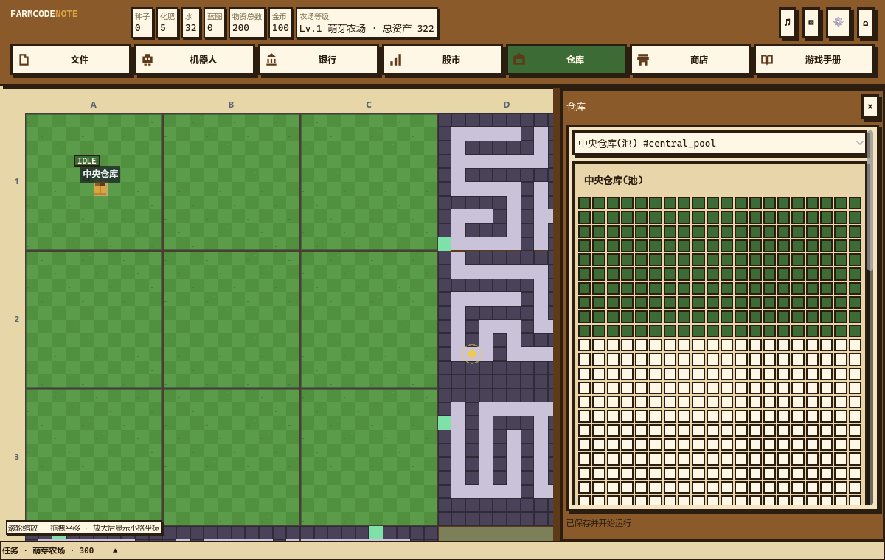

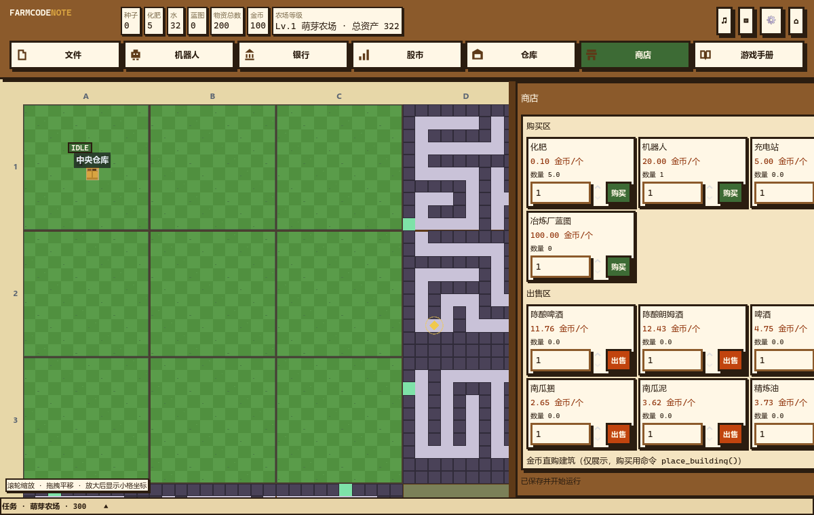

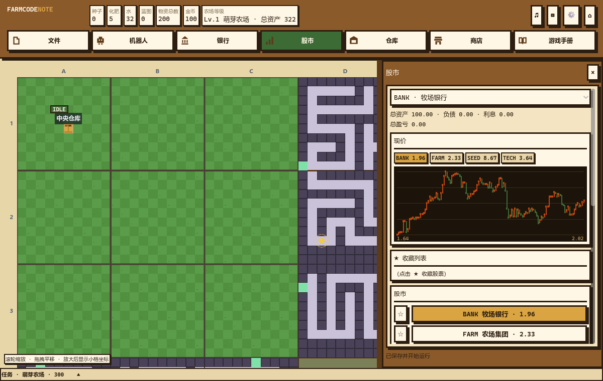

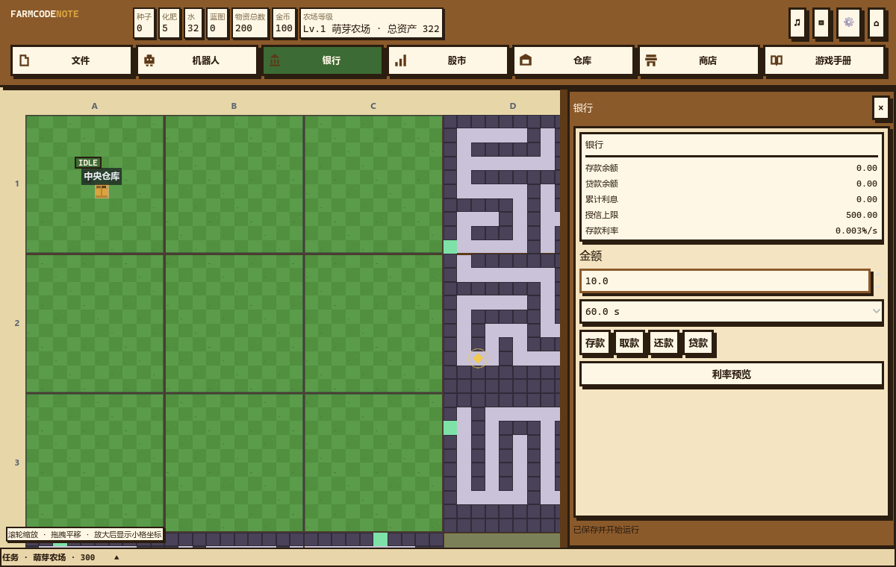

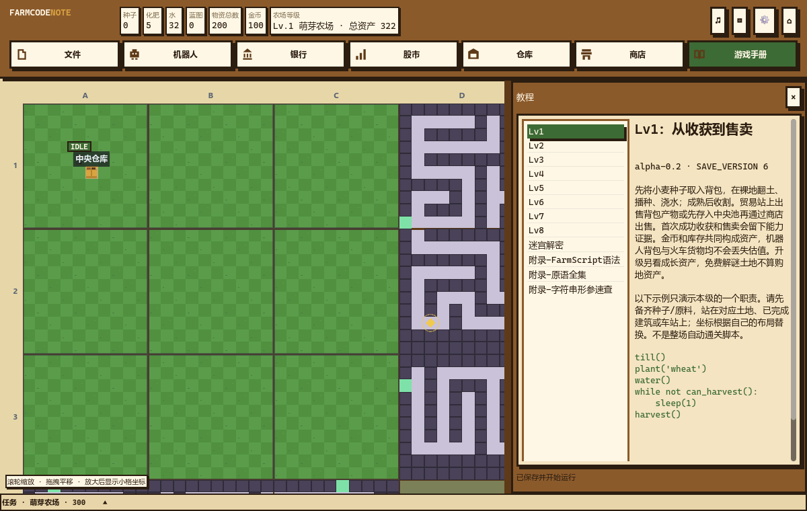

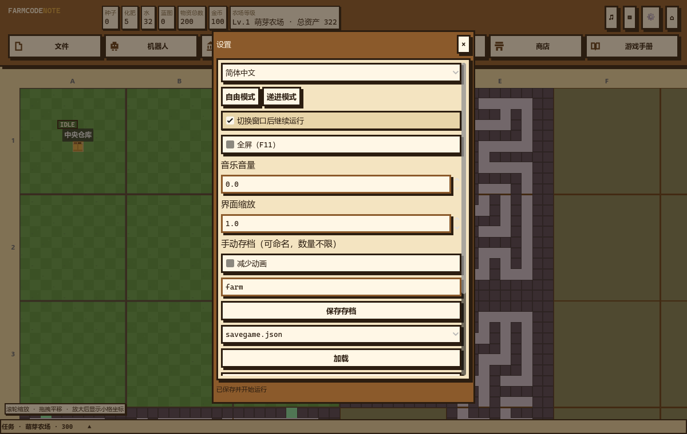

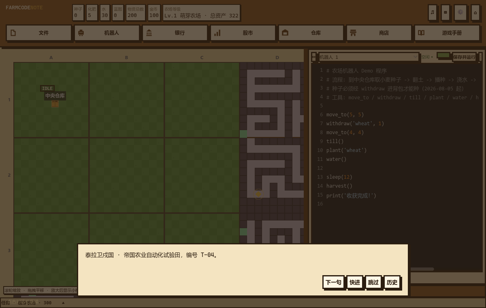